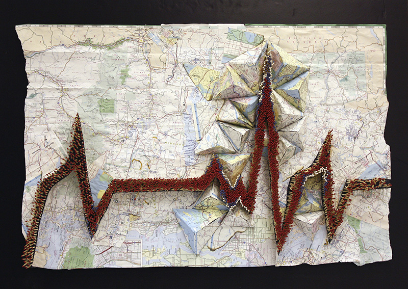
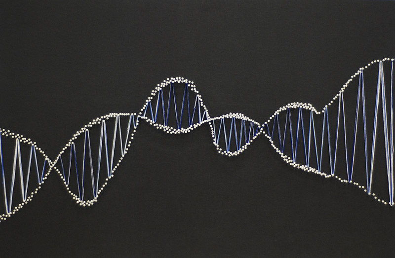
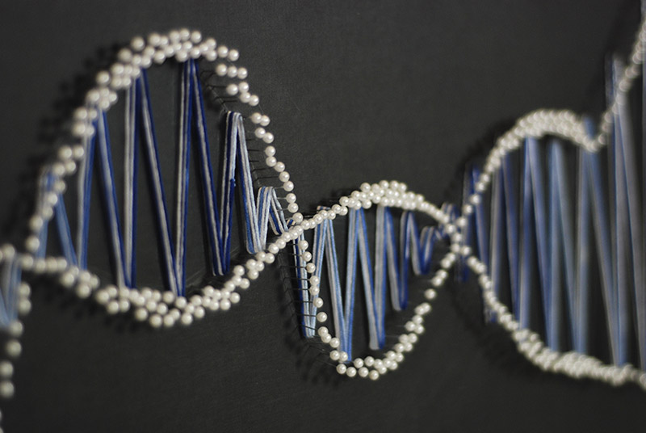
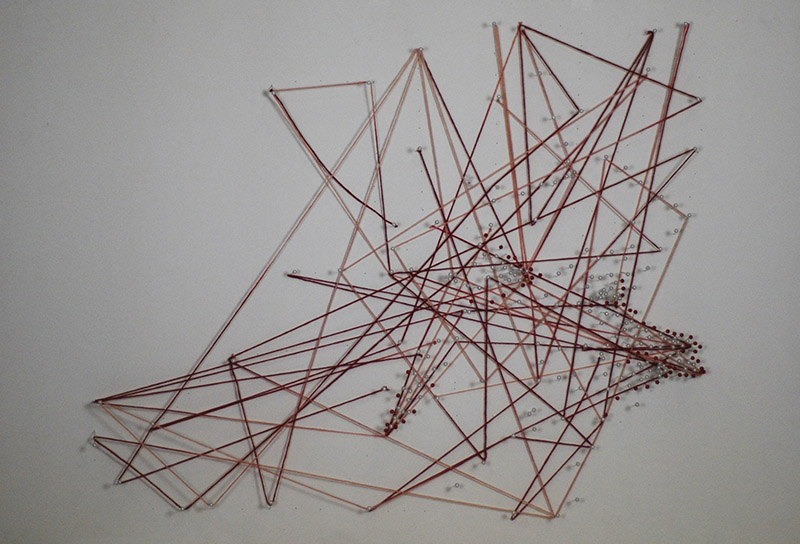
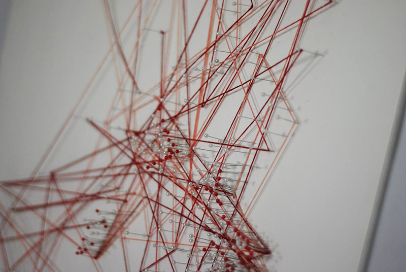
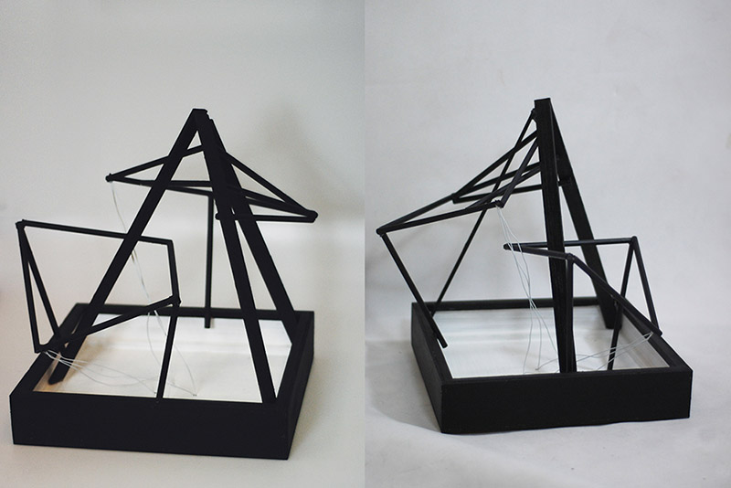
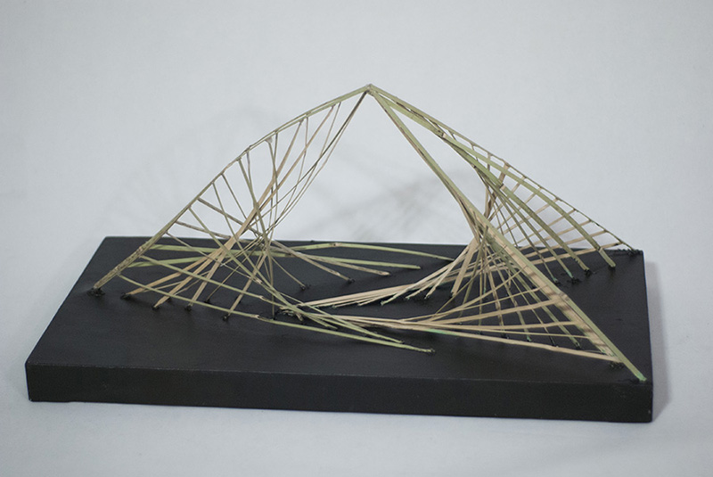
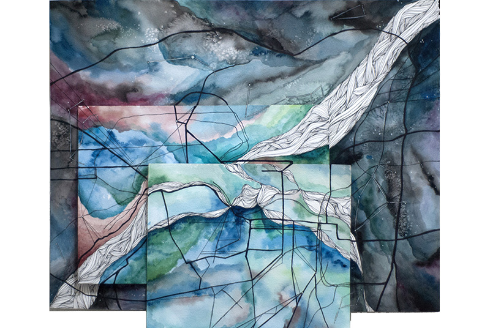

"Earthbeat" / matches, map and styrofoam
"Mountain Sound" / pins and thread on cardstock
"Mountain Sound" / close up
"14/329" / pins and thread of cardstock
"14/329" / close up
"Intertwined" / pencils, wire, and wood
"Disparity" / bamboo
"Hearth" / mixed media relief«»
These pieces of art are a combination of sculptural pieces and relief scultptures.
While my initial focus of study in art was on concrete representations of forms and ideas, this collection exhibits an exploration of media and dimension. Many of these piece combine 2-d and 3-d aspects, and are very abstract.
Despite their abstract nature, this collection also relates to the idea of different environments and people's interaction with these environments. The two pieces made of pins and thread, "Mountain Sound" and "14/329", are a contrast between rural environments, portrayed through "Mountain Sound", and urban environments, portrayed through "14/329." "Mountain Sound" is an abstracted outline of overlapping mountains, while "14/329" is a representation of the Shanghai subway system and the connections between the different lines
By working with abstract forms of expression, I was able to invest myself into the concept over the physical appearance, creating a deeper connection with my own work.